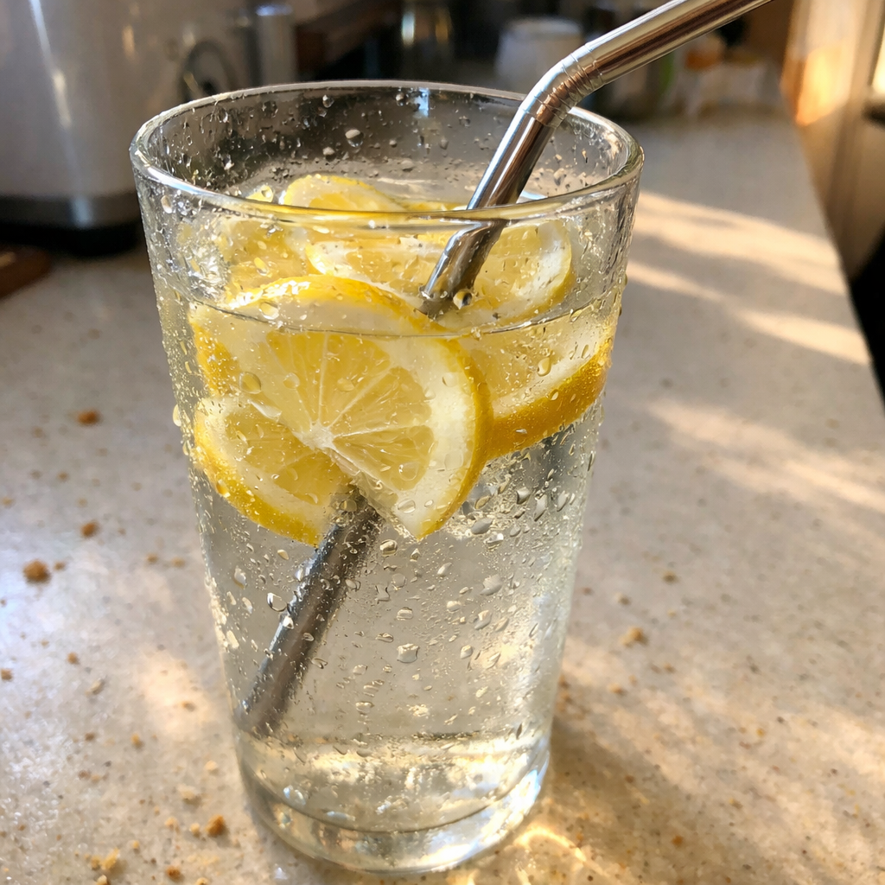

Your instinct to avoid the metallic taste was right.
That taste is metal dissolving into your drink.
Chromium and nickel leach into acidic beverages through stainless steel.
Higher temperature, longer contact, more worn surface — more leaching.
Your mouth was telling you the truth.
You've noticed it.
Maybe with your morning coffee.
Maybe with lemonade on a hot day.
That slight metallic edge that wasn't there before.
You told yourself you were imagining it.
You weren't.
Stainless steel sounds inert. It isn't.
"Stainless" is a marketing term, not a chemical promise.
Acidic drinks accelerate the process.
Hot drinks accelerate it more.
Worn surfaces — scratches, dents, daily use — increase the transfer.
Every morning. Every refill.
The metal you taste is the metal you're consuming.
Trace amounts. Accumulating over time.
Nickel sensitivity shows up as skin reactions.
You might already have it.
Your body was warning you.
You dismissed the signal because it seemed paranoid.
It was data.
5 reasons you shouldn't use metal straws: strawesome.com/presell
See more

🍋
The Lemon Water
Run generate_strawesome_images.py to create
🎨
Raw iPhone photo of a glass of lemon water with visible lemon slices and a metal straw inside. Condensation on the outside of the glass. Morning kitchen light, counter has breakfast crumbs visible. The acidic citrus + metal combination is the focus. 'My healthy morning drink' energy but with metal straw creating the problem. Shot casually, slightly tilted, condensation droplets catching light.
strawesome.com
5 Reasons You Shouldn't Use Metal Straws
Your body was warning you. It was data.